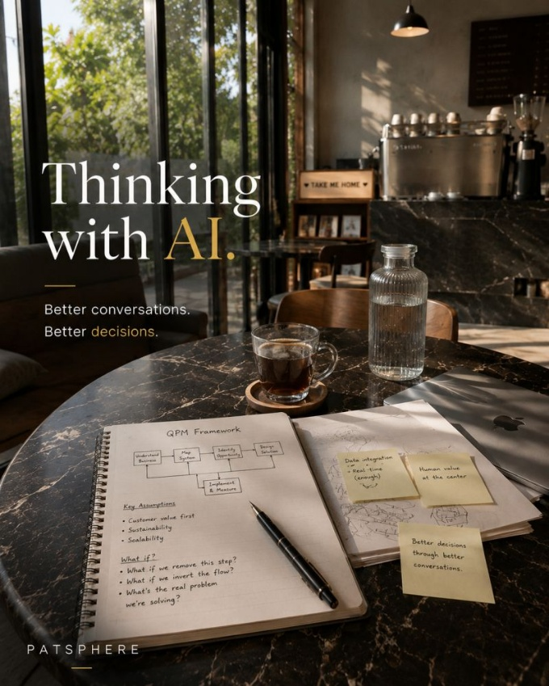
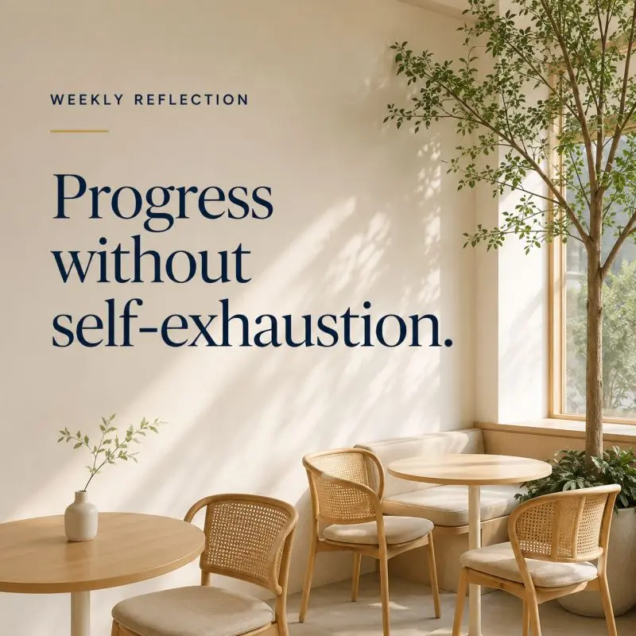

REFLECTIONS & INSIGHTS
Thoughts shaped by experience, observation, and the work behind the work.
Think deeper · Act wiser · Grow together

REFLECTIONS & INSIGHTS
Explore ideas in two ways.
LATEST INSIGHT
INSIGHT · AI × HUMAN JUDGMENT
AI ที่ดี ไม่ควรเห็นด้วยกับเราทุกเรื่อง
เมื่อ AI สามารถให้คำตอบเราได้แทบทุกเรื่อง คุณค่าที่สำคัญกว่าอาจไม่ใช่การตอบ แต่คือการช่วยตรวจสอบวิธีคิดของเรา ก่อนที่เราจะตัดสินใจ
Read InsightFEATURED REFLECTION

Weekly Reflection
Good advice does not begin with solutions. It begins with the right diagnosis.
The role of an advisor is not to answer quickly. It is to identify what is actually creating the problem.
EXPLORE REFLECTIONS
Browse by theme.
More reflections and insights are shared regularly on LinkedIn.
Connect on LinkedInRead short-form thinking on LinkedIn, then explore deeper Insights here on PATSPHERE.